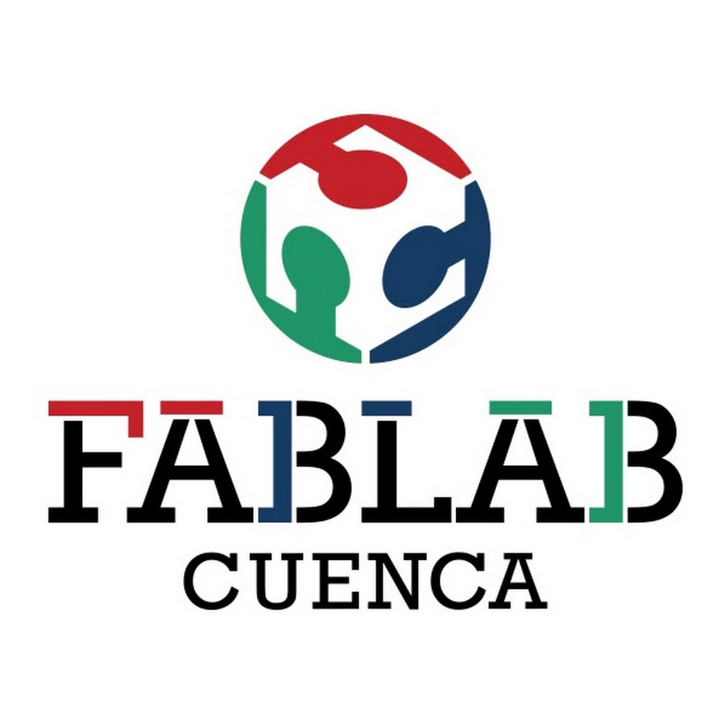

Quiénes somos
Aquí irá una presentación breve de los integrantes y sus responsabilidades.

FabLab I+DBitácora de ingeniería y prototipadoAquí irá una descripción general del equipo, sus objetivos y el contexto de la materia.
Aquí irá una presentación breve de los integrantes y sus responsabilidades.
Aquí irá una explicación general del trabajo de investigación y desarrollo.
Aquí irá una descripción del proceso, las herramientas y la forma de documentar los avances.